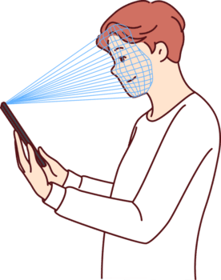

How to evolve your Sharingan

Hold the phone a little far from your face — your complete face should fit in the frame.
- Keep your whole face in the frame and look at the camera with both eyes open. You will first see your real eyes — no Sharingan yet.
- Close both eyes and hold them shut for 1–2 seconds — a quick blink will not count.
- Open your eyes wide — the first time, your Sharingan awakens; after that, each held blink evolves it to the next stage.
- Repeat to climb all 12 stages. The last (yellow) stage does not spin.
You can also use Next / Prev, or the n / p keys. On a keyboard, r resets and s saves a snapshot.